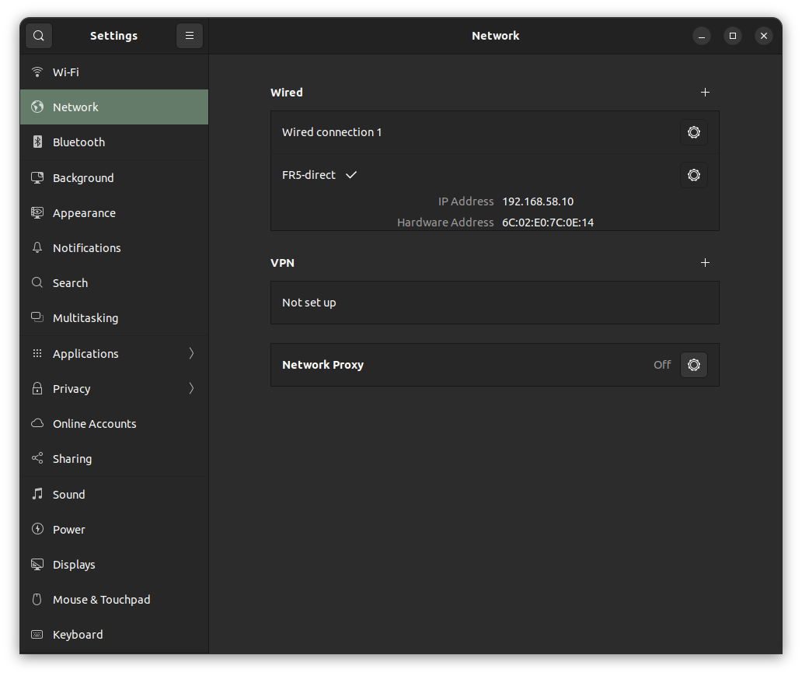
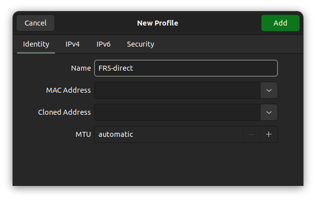
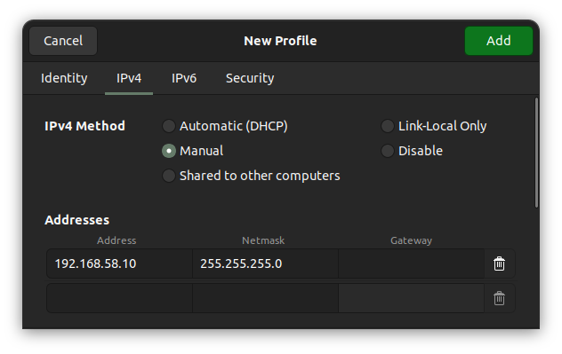

FAIRINO FR5 MoveIt 2 환경 구성
PC와 FR5를 연결하고 ROS 2 Humble에서 MoveIt 2를 실행할 수 있도록 환경을 구성하는 절차입니다. 아래 명령은 Ubuntu 터미널의 Bash 기준입니다.
문서의 네트워크 설정 캡처는 images/fr5-network/, 실행 영상은 videos/에 포함되어 있습니다. Markdown으로 배포할 때는 이 문서와 이미지·영상의 상대 위치가 유지되도록 docs 폴더 전체를 함께 전달합니다.
1. 구성 환경 및 사전 준비
| 항목 | 기준 |
|---|---|
| OS | Ubuntu 22.04, x86_64 PC |
| ROS | ROS 2 Humble Desktop |
| 로봇 모델 | FR5 V6.0 |
| 로봇 Web/소프트웨어 버전 | v3.9.3 |
| 확인한 제어기 버전 | V3.9.15-QX |
| 저장소 태그 | V3.0.0_RobotV3.9.3 |
| 작업공간 | ~/fairino_ws |
이 문서는 위 장비를 기준으로 작성했습니다. 다른 장비에서는 WebApp의 System → About에서 모델과 소프트웨어 버전을 먼저 확인하고, 대응하는 드라이버 버전을 선택합니다. 여기서 선택한 태그의 하드웨어 패키지 이름은 fairino_hardware입니다. 공식 v3.9.3 릴리스
필요한 패키지 설치
ROS 2 Humble Desktop과 ROS apt 저장소가 이미 설치·설정된 PC에서 실행합니다. MoveIt은 /opt/ros/humble의 apt 설치본을 사용합니다. 제조사 MoveIt 설치 안내
sudo apt update
sudo apt install \
git build-essential cmake python3-colcon-common-extensions \
ros-humble-moveit \
ros-humble-ros2-control ros-humble-ros2-controllers \
ros-humble-xacro ros-humble-joint-state-publisher-gui \
ros-humble-rosidl-default-generators \
ros-humble-ament-cmake-gmock \
ros-humble-ament-lint-auto ros-humble-ament-lint-common
터미널 환경 준비
다른 ROS 작업공간의 환경이 함께 로드되면 패키지·라이브러리 버전 충돌이 발생할 수 있습니다. ~/.bashrc에 다른 작업공간을 자동으로 불러오는 줄이 있다면 앞에 #를 붙이고 새 터미널을 엽니다. 다음은 주석 처리 대상의 예시입니다.
# source ~/ros2_ws/install/local_setup.bash
# source ~/tetra_ws/install/local_setup.bash
# source ~/ws_moveit/install/setup.bash
# source ~/franka_ros2_ws/install/setup.bash
ROS 기본 설정인 source /opt/ros/humble/setup.bash는 유지합니다. 기존 터미널에서 .bashrc를 다시 불러오는 것만으로는 이미 로드된 환경이 제거되지 않습니다.
프롬프트에 (base) 등 Conda 환경이 표시된다면 conda deactivate로 해제합니다.
새 터미널에서 확인합니다.
source /opt/ros/humble/setup.bash
ros2 pkg prefix moveit_ros_move_group
ros2 pkg prefix joint_trajectory_controller
두 결과 모두 /opt/ros/humble이어야 합니다. 첫 빌드 전에는 ~/fairino_ws/install이 아직 없으므로 해당 경로를 source하지 않습니다.
2. PC–FR5 연결 및 WebApp 로그인
로봇 제어함/버튼박스의 PC 연결용 LAN 포트에 PC를 연결합니다. 로봇 내부 통신용 포트와 구분합니다. 아래는 기본 IP 192.168.58.2를 사용하는 버튼박스 측 연결 기준입니다. 제조사 연결 안내
로봇용 유선 연결 프로필을 FR5-direct라는 이름으로 따로 만듭니다. 기존 Wired connection 1은 보존하고, FR5를 사용할 때 FR5-direct를 선택합니다. 두 항목은 같은 유선 어댑터에서 선택해 사용할 수 있는 서로 다른 설정입니다.
PC에 유선 어댑터가 여러 개라면 로봇에 연결한 어댑터를 선택합니다. 이번 구성에 사용한 PC의 인터페이스 이름은 eno1이지만 PC마다 다를 수 있습니다.
2-1. Network에서 유선 프로필 추가
Ubuntu 설정(Settings) → 네트워크(Network)를 열고, 로봇에 연결한 유선(Wired) 항목 오른쪽의 +를 누릅니다.

그림 2-1. 캡처에는 이미 생성하고 활성화한 FR5-direct와 PC 주소 192.168.58.10이 보입니다. 처음 설정하는 PC에서는 +로 새로 만들고, 이미 FR5-direct가 있다면 해당 항목의 톱니바퀴에서 설정을 확인합니다.
2-2. Identity에서 이름 설정
새 프로필의 Identity 탭에서 그림처럼 Name을 FR5-direct로 입력합니다. 나머지 탭 설정까지 마친 후 Add를 누릅니다.

그림 2-2. 프로필 이름을 FR5-direct로 지정한 화면입니다. MAC 주소는 로봇에 연결한 PC 어댑터 기준이며, 다른 PC의 주소를 복사하지 않습니다.
2-3. IPv4를 수동 주소로 설정
IPv4 탭에서 IPv4 Method → Manual(수동)을 선택하고, 그림처럼 PC 주소와 넷마스크를 입력합니다. Gateway는 비워 둡니다.

그림 2-3. 로봇 연결에 사용할 수동 IPv4 주소를 입력한 화면입니다. DNS 항목은 아래로 스크롤해 확인합니다.
설정값은 다음과 같습니다.
| 설정 | 값 |
|---|---|
| IPv4 Method | Manual |
| Address | 192.168.58.10 |
| Netmask | 255.255.255.0 |
192.168.58.10은 PC의 주소, 192.168.58.2는 로봇의 주소입니다. PC의 Address 칸에 로봇 주소를 입력하지 않습니다.
2-4. 나머지 설정 확인 후 저장
- IPv6 탭: Disable을 선택합니다. 로봇 연결은 IPv4를 사용합니다.
- Security 탭: 802.1x Security를 끔(Off)으로 유지합니다.
설정을 마쳤다면 오른쪽 위 Add를 눌러 저장합니다. 기존 프로필을 편집 중이라면 저장 버튼이 Apply로 표시될 수 있습니다.
3. 저장소 다운로드 및 버전 선택
아래는 작업공간과 저장소를 처음 만드는 경우의 명령입니다. 이미 해당 브랜치에서 작업 중이라면 반복할 필요가 없습니다.
mkdir -p ~/fairino_ws/src
cd ~/fairino_ws/src
git clone https://github.com/FAIR-INNOVATION/frcobot_ros2.git
cd ~/fairino_ws/src/frcobot_ros2
git switch -c fr5-v3.9.3 V3.0.0_RobotV3.9.3
4. 하드웨어 설정 세팅
빌드 전에 MoveIt이 사용할 하드웨어 플러그인과 로봇 IP를 설정합니다. 이미 launch를 실행 중이라면 Ctrl+C로 종료한 뒤 파일을 수정합니다.
플러그인 설정
편집할 하드웨어 설정 파일의 경로는 다음과 같습니다.
~/fairino_ws/src/frcobot_ros2/fairino5_v6_moveit2_config/config/fairino5_v6_robot.ros2_control.xacro
기본값은 가상 로봇용 플러그인입니다.
<plugin>mock_components/GenericSystem</plugin>
실제 FR5에 연결하려면 위 줄을 주석 처리하고 실제 드라이버를 활성화합니다. <!-- ... -->는 XML 주석이며, <hardware> 안에서 주석 처리되지 않은 <plugin>은 한 개만 둡니다.
<!-- <plugin>mock_components/GenericSystem</plugin> -->
<plugin>fairino_hardware/FairinoHardwareInterface</plugin>
실행 대상은 이 설정으로 결정됩니다. 가상 플러그인을 유지하면 가상 로봇을 사용하고, 실제 드라이버를 선택하면 FR5에 연결합니다. 실행 명령은 동일합니다.
로봇 IP 확인
드라이버의 IP는 다음 파일에 지정되어 있습니다.
~/fairino_ws/src/frcobot_ros2/fairino_hardware/include/fairino_hardware/fairino_hardware_interface.hpp
#define CONTROLLER_IP_ADDRESS "192.168.58.2"
로봇 IP가 192.168.58.2라면 그대로 사용합니다. 다른 IP를 사용한다면 실제 주소로 변경한 뒤 저장합니다.
5. Build
1절에서 준비한 터미널에서 4절의 설정을 반영해 필요한 네 패키지를 빌드합니다.
source /opt/ros/humble/setup.bash
cd ~/fairino_ws
colcon build --symlink-install --packages-select \
fairino_msgs \
fairino_hardware \
fairino_description \
fairino5_v6_moveit2_config
네 패키지 모두 빌드가 완료되고 Failed 또는 Aborted가 없는지 확인합니다. 이후 하드웨어 설정이나 IP를 변경했다면 위 명령으로 다시 빌드합니다.
6. 실행
빌드가 완료되면 다음 명령으로 MoveIt과 RViz를 실행합니다. 새 터미널을 열 때에도 두 줄의 환경 설정을 먼저 불러옵니다.
실제 FR5 드라이버를 선택하면 launch 후 활성화 시점부터 주기적으로 제어 명령이 전송됩니다. 작업 공간과 비상정지 접근을 확보하고 담당자와 실행 준비를 확인합니다.
source /opt/ros/humble/setup.bash
source ~/fairino_ws/install/local_setup.bash
ros2 launch fairino5_v6_moveit2_config demo.launch.py
이 문서에서는 local_setup.bash를 사용해 FR5 작업공간을 추가합니다. install/setup.bash는 빌드 당시 기록된 다른 작업공간까지 불러올 수 있습니다.
RViz에 FR5 모델과 MotionPlanning 패널이 표시되는지 확인합니다. 종료할 때는 launch를 실행한 터미널에서 Ctrl+C를 누릅니다.
실행 영상
문서에서 영상이 재생되지 않으면 실행 영상 열기를 선택합니다.